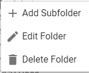
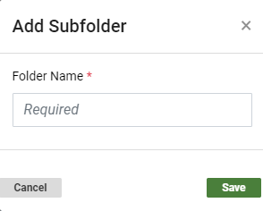
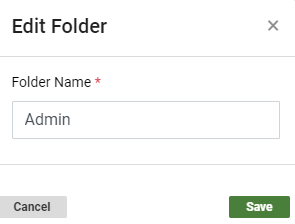
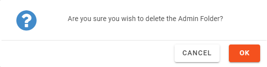

Saved searches are organized in folders, either the
main (parent) folders provided in or in custom folders you
create within the parent folders. Parent folders include:
-
Public:
Contains searches available to all users who have access to the case or
review batch in which the search is created/saved. (By default, folders
are public and will be stored in the Public
Searches folder.)
-
Shared:
Limits searches to specific user groups you choose.
|

|
Note:The Shared Folder hierarchy structure is limited to no deeper than 10 levels.
|
-
Private:
Contains searches available to only you or a Super Administrator.
-
In , click a case card.

-
Click the Enter Case button.

The Visual Search Dashboard appears.

-
Hover over the Saved Searches icon  on the left side of the screen.
on the left side of the screen.
The Saved Searches & Smart Folders panel opens. You can also pin the Saved Searches panel in place by clicking the pin icon . If necessary, scroll down to view the sections corresponding to Public, Shared, and Private Folders.

- Locate the folder in the Saved Searches panel to which you want to add a new subfolder. You can create subfolders under Public, Shared, and Private Folders.
-
Right-click a Public, Shared, or Private Folder header and select .
-Or-
Right-click a folder and select Add Subfolder.

The Add Subfolder dialog box appears.

-Or-
Click the icon to the right of the Public, Shared, and Private Folders sections.
|
|
Note: The icon does not display until you move your cursor over each respective folder heading.
|
The Add Subfolder dialog box appears.
- Type the name of the new subfolder.
-
Click Save. The new folder displays in the folder list.
|
|
Shared folders only: When adding Shared folders, you must also select the needed user group(s). Only the users in these groups will be able to see and use the searches saved in the folder.
If you have a hierarchy of shared folders, child folders cannot have more or different user groups assigned than their parent folders. For example, if a parent folder has three groups assigned, then its child folder(s) can be restricted only to one or more of those groups.
|
- Repeat steps 1-7 to add other folders.
-
In , click a case card.
-
Click the Enter Case button.
The Visual Search Dashboard appears.
-
Hover over the Saved Searches icon on the left-side of the screen.
The Saved Searches panel appears. You can also pin the Saved Searches panel in place by clicking the pin icon . If necessary, scroll down to view the sections corresponding to Public, Shared, and Private Folders.
- Right-click the folder you want to edit or delete.
To edit a folder:
Select Edit Folder.
The Edit Folder dialog box appears.

- Type a new folder name and click Save.
To delete a folder:
Select Delete Folder.
A warning message appears.

- To delete the folder, click OK.